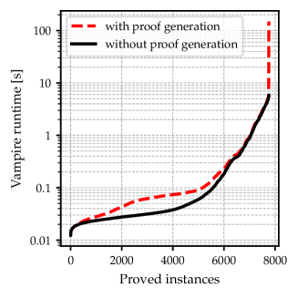

Reconstructs Vampire's automatic first- and higher-order proofs as trusted, checkable Lean proofs to consolidate user trust.
Abstract
Vampire proves theorems completely automatically in first- and higher-order logic extended with theories. Proof checking is increasingly demanded to consolidate user trust in Vampires output. We describe ongoing efforts in reconstructing Vampire proofs as trusted proofs in Lean
Problem
Automated theorem provers like Vampire produce proofs that are difficult to trust without independent verification. Reconstructing these proofs in a trusted proof assistant would consolidate confidence, but translating first-order logic proofs into Lean is non-trivial.
Approach
Vampire is modified to output a Lean file alongside its proof. The system reconstructs preprocessing steps (clausification, Skolemization via Lean's axiom of choice) and core inference rules (superposition, demodulation, resolution) in Lean. The translation targets CNF and FOF problems from the TPTP library.
Results
On TPTP problems where baseline Vampire finds a proof by contradiction, the modified version successfully produces Lean-checkable proofs for 3785 of 3860 CNF problems and 3296 of 3897 FOF problems. The overhead in Vampire for generating the Lean file is small relative to proof search time.

Figure 4 : (a) Comparing baseline Vampire and our Vampire version outputting a Lean file; here, we include only CNF and FOF problems where baseline Vampire found a proof by contradiction. This plot only accounts for the overhead in Vampire , not for Lean proof reconstruction and checking time. Notice the logarithmic y-axis. (b) A scatter plot comparing the Lean proof reconstruction and checking ru